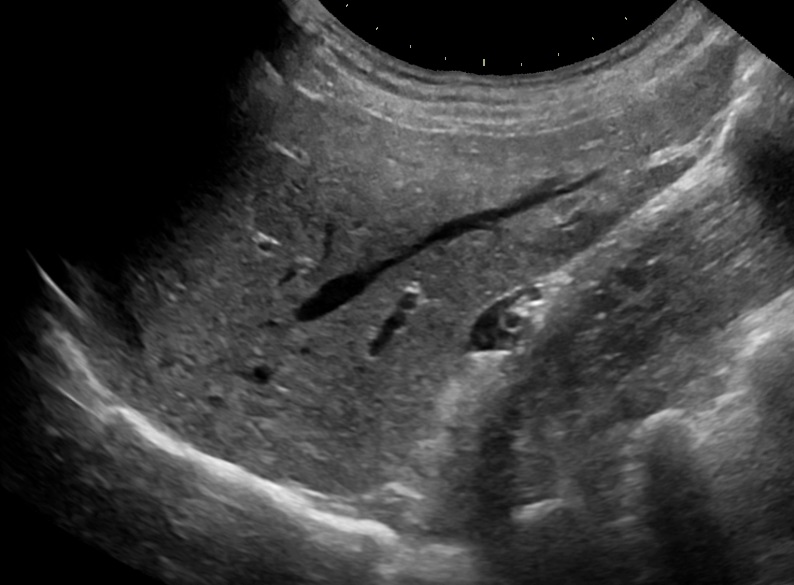

Ficha del catálogo
Ultrasonido hepático normal
- Sistema
- Digestivo
- Modalidad
- US
- Región
- Abdomen
- Dificultad
- Básico
El ultrasonido es el primer estudio del abdomen superior: No usa radiación, es accesible y permite valorar hígado, vesícula, vía biliar, páncreas, bazo y riñones en la misma exploración.
Técnica
Transductor convexo de baja frecuencia, paciente en ayuno de 6-8 horas para que la vesícula esté distendida. Se emplean cortes subcostales e intercostales, pidiendo inspiración profunda para descender el hígado.
Qué observar
- Ecogenicidad del parénquima hepático, que normalmente es ligeramente superior a la de la corteza renal derecha
- Textura homogénea, sin nódulos ni áreas focales
- Contorno hepático liso: Su irregularidad sugiere cirrosis
- Tamaño hepático, midiendo el lóbulo derecho en la línea medioclavicular (habitualmente menor de 15-16 cm)
- Venas suprahepáticas y porta, valorando calibre y permeabilidad
- Vía biliar intrahepática no dilatada, que en condiciones normales apenas se identifica
Hallazgos
Hígado de tamaño normal, ecogenicidad y textura homogéneas, con contornos lisos y sistema vascular de calibre conservado.
Perlas
La comparación entre hígado y riñón derecho es la maniobra más útil del ultrasonido abdominal: Si el hígado se ve claramente más brillante que la corteza renal, se trata de esteatosis (hígado graso). Es una comparación rápida que no requiere medir nada.
Diagnóstico diferencial
- Esteatosis hepática
- El parénquima se ve claramente más brillante que la corteza renal, con atenuación del haz en profundidad y peor definición de las paredes vasculares.
- Cirrosis
- El contorno hepático se hace nodular, la textura heterogénea, el lóbulo caudado y el segmento lateral izquierdo se hipertrofian y aparecen signos de hipertensión portal.
- Hepatopatía congestiva
- Las venas suprahepáticas y la cava inferior están dilatadas y no colapsan con la respiración, en el contexto de insuficiencia cardiaca derecha.
- Quiste hepático simple
- Es una lesión anecoica de pared imperceptible con refuerzo acústico posterior y sin vascularización interna.
- Hemangioma
- Suele ser una lesión hiperecogénica homogénea, bien delimitada y de comportamiento estable, aunque la confirmación puede requerir estudio con contraste.
- Metástasis hepáticas
- Son lesiones múltiples de ecogenicidad variable, a menudo con halo hipoecoico periférico, en un paciente con tumor primario conocido.
Simuladores
- La grasa focal y las áreas de ahorro graso, típicamente junto al lecho vesicular o al hilio portal, simulan lesiones focales pero tienen bordes geométricos y no desplazan los vasos.
- El artefacto de sombra por costillas y por gas intestinal crea zonas oscuras que se confunden con lesiones hipoecoicas (se resuelven cambiando la ventana o pidiendo inspiración).
- Una ganancia mal ajustada hace parecer el hígado brillante y lleva a diagnosticar esteatosis inexistente (la comparación con el riñón en la misma imagen y con la misma ganancia lo evita).
- El lóbulo de Riedel es una prolongación normal del lóbulo derecho que puede interpretarse erróneamente como hepatomegalia.
Por modalidad
- US
- Primera línea del abdomen superior por su disponibilidad, ausencia de radiación y capacidad de valorar en el mismo estudio hígado, vía biliar, páncreas, bazo y riñones.
- TC
- Caracteriza lesiones focales mediante el estudio dinámico en varias fases de contraste y valora la extensión de la enfermedad.
- RM
- Ofrece la mejor caracterización de lesiones hepáticas, cuantifica grasa y hierro y estudia la vía biliar sin contraste mediante colangiorresonancia.
- RX
- Aporta poco (solo muestra de forma indirecta hepatomegalia o calcificaciones).
Protocolo
El paciente acude en ayuno de seis a ocho horas para reducir el gas intestinal y mantener la vesícula distendida. Se explora en decúbito supino y en decúbito lateral izquierdo con un transductor convexo de baja frecuencia, empleando accesos subcostal e intercostal y solicitando inspiración profunda mantenida para descender el hígado bajo el reborde costal. Se recorren los ocho segmentos hepáticos en planos longitudinales, transversales y oblicuos, se mide el lóbulo derecho en la línea medioclavicular y se valoran la vena porta, las suprahepáticas y la vía biliar, añadiendo Doppler color y espectral para comprobar permeabilidad y dirección del flujo.
Clasificación
La esteatosis se gradúa de forma semicuantitativa en leve, moderada y grave según el aumento de la ecogenicidad respecto al riñón, la atenuación del haz en profundidad y la dificultad para visualizar las paredes vasculares y el diafragma. La fibrosis se estadifica con elastografía, que mide la rigidez del tejido y se correlaciona con los estadios histológicos. En pacientes con riesgo de carcinoma hepatocelular se aplica un sistema estructurado de categorías de sospecha que asigna a cada lesión un nivel de probabilidad y una conducta. La hipertensión portal se valora por el calibre de la porta, la presencia de circulación colateral y la esplenomegalia.
Errores frecuentes
- Diagnosticar esteatosis sin comparar el hígado con la corteza renal en la misma imagen y con los mismos ajustes.
- Confundir áreas de grasa focal o de ahorro graso con lesiones focales verdaderas.
- Realizar el estudio sin ayuno y no poder valorar la vesícula ni el páncreas por interposición de gas.
- Detener el estudio en el hígado y no revisar de forma sistemática vía biliar, páncreas, bazo, riñones y líquido libre.

higado ultrasonido abdomen normal esteatosis ecogenicidad porta